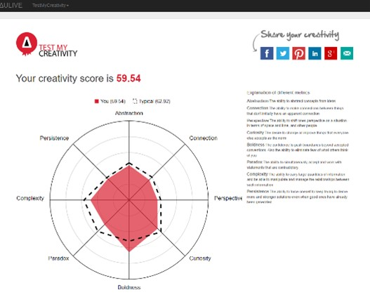
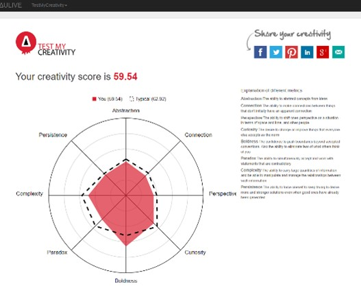
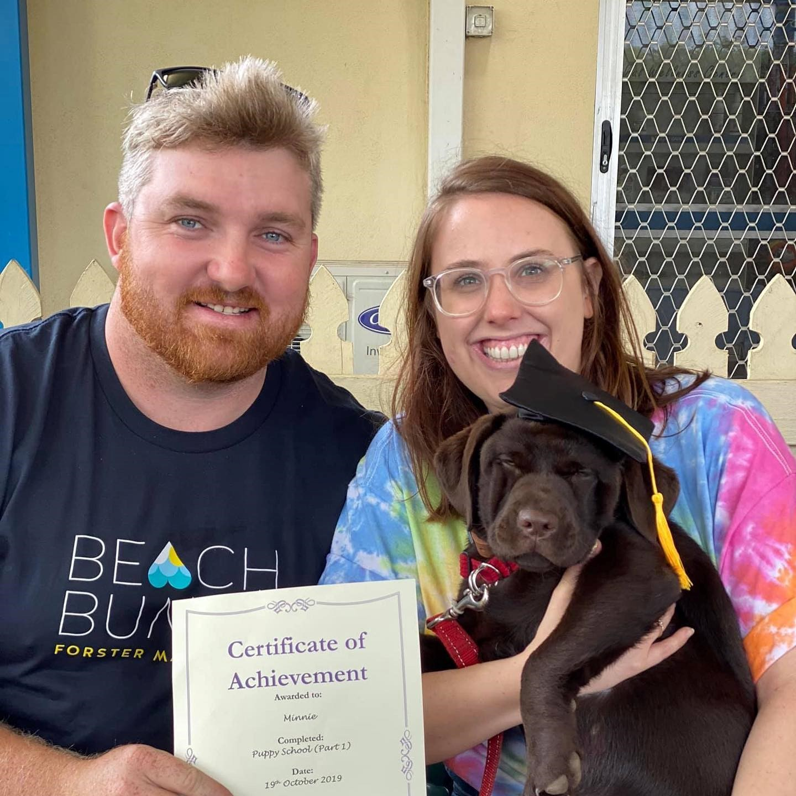
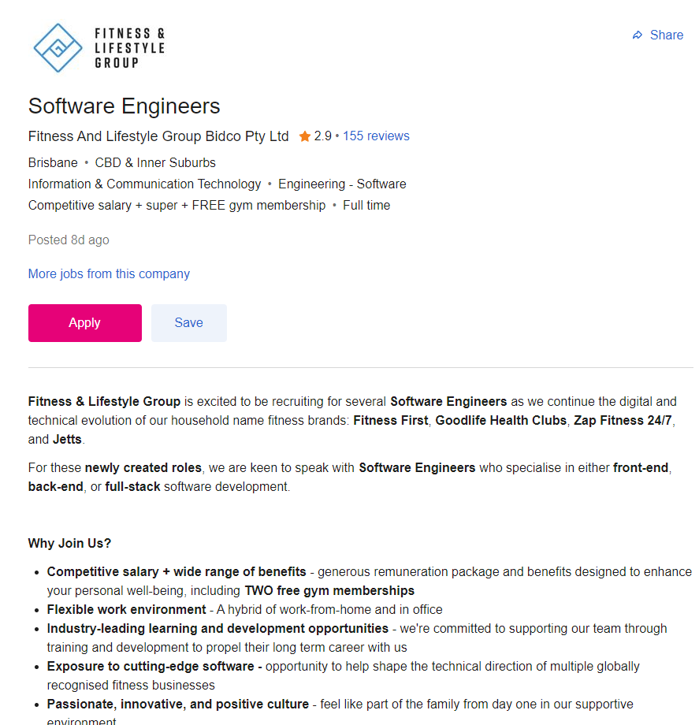
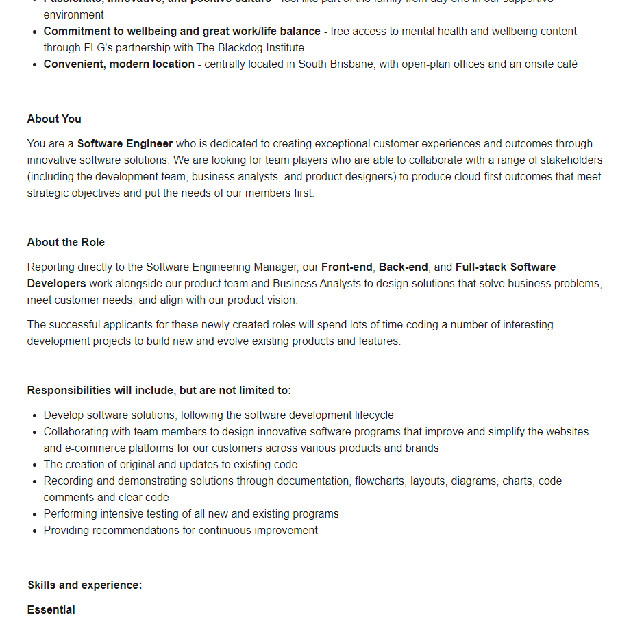
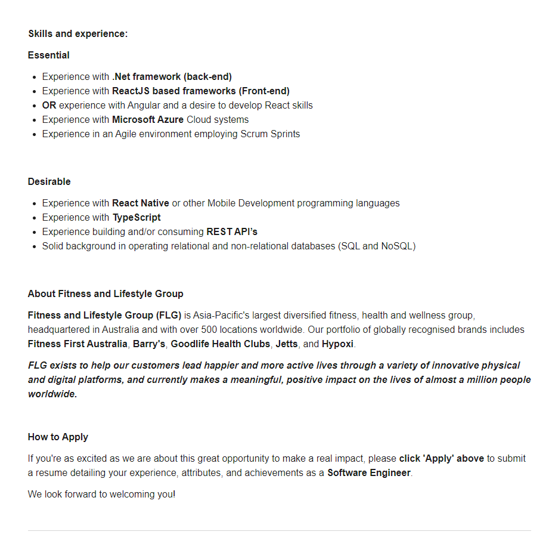
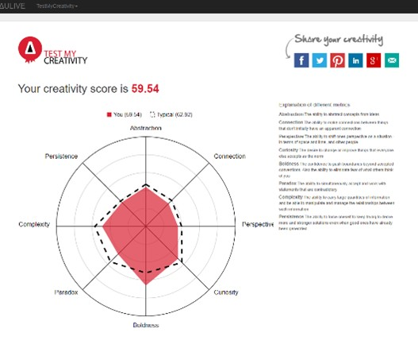

My name is Matthew Bradley aand 3 months ago I made the decision to completely change my career. I am currently a supervisor within my families business, specialising in road infrastructure. This role has taken me across Australia and allowed me to meet people across all walks of life. I have been very fortunate with my progression but I believe it is time to move into a field I am passionate about. IT has always been a challenge that interests me. I have a head strong personality, great problem solving skills and a determination to make things work.
I live with my partner Pip and our 2 dogs, Boots; a Dachshund x German Pointer and the chunky one in the photo is my Labrador Minnie. Our weekends mostly consist of taking the dogs on adventures, we love 4WDing on the beach. Pip and myself have been together for 9 years and have been lucky enough to travel Europe and the United Kingdom several times. Our goal is to see a lot more of the world together.
if you need to contact me my Email is S3934467@student.rmit.com.au
My interest in IT stems from my passion for efficiency and getting systems to work in an easy and logical manner. I always have my eye on the latest and greatest in systems and tech.
The definitive moment that really pulled me into the world of tech would be 12 months ago when my employer decided to over-hall all of our current forms and procedures and go digital, which required someone to design them, I volunteered and absolutely loved the process. The system used is Gocanvas which requires no coding required and I found it was very simple to use. As mentioned, I genuinely enjoyed the process but I still felt a frustration that I was restricted to the limits of the APP. I wanted to gain the knowledge to be able to perfect the system and to make it as efficient as possible. Later that week I started to research what was required to turn this passion and interest into a career.
I never thought it was possible to study whist at work, but with some research I came across Open Universities Australia which lead me to RMIT. With the study method being 100% online this is going to be my best chance move in the direction of my desired career.
I am currently drawn to vast field of cyber security and robotics but my main focus is to gather as much information in the wide landscape of Information Technology, its many branches and careers, and to learn firsthand from people who currently work in the industry.
  
The exampled position is a Software Engineer for a health and wellness group. The position is calling for engineers specialising in front and back end, or full-stack development. The role will revolve around software development; such as apps, building and improving websites, and also providing recommendations for future-state plans and improvements. The position will also require testing apps, websites and modifications.
The above position draws my attention as it is not exclusively a Tech company but has an internal IT department, which lends to more experience across different areas of a business. I am also drawn to this position due to understanding of their current product (fitness and gym information app) and clientele. I understand as a consumer what is needed for this particular app. This is a position I feel would have a high need for problem solving and continual improvement. This is an environment I strive as I am always looking to be more efficient in various aspects of my day, health and fitness included.
The experience criteria for the position is quite expansive. The position will manage net.framework (backend); this will require experience in languages such as Python and Java. HTML, Javascript and CSS experience will be a must for the front end development. Previous knowledge and experience in Azure (the chosen Cloud Storage) is preferable. Well-developed collaboration skills are also favourable as Scrum will be used to utilise the team.
My current career and corresponding skills are focused on preparation and organisation of a team and materials needed to complete tasks, whilst also dealing with client’s needs, expectations and parameters. This has taught me much needed skills regarding time management and the prioritisation of tasks. Although my field is currently not within the IT sector I do believe my current skill set will be very applicable in any field, particularly tech and more specifically this particular role.
Due to my limited skill set in coding and previous experience, I am currently not qualified for this position. However, the skills I gain while completing my Degree of Information Technology will be the first step in gaining the appropriate knowledge before completing a Bachelor of Computer Science. My future plan involves completion of Degree of Information Technology, gaining experience and employment in the technology landscape before furthering my education in the above mentioned Bachelor’s degree. I believe all of these steps will further my succession in a position similar as the one outlined.

The outlined results shown by the 16 personalities test, was not a surprise. I have always been assertive in my day-to-day dealings, my current role requires me to lead from the front and I am generally a pragmatic person. I was however, surprised by the results of the Learning Style Test and the evidenced Tactile Learning Trait. Only 5% of people fall into this category and had previously considered myself as a visual learner, this has encouraged me reconsider my learning style. I have never considered myself a creative person and the results of the Creativity Test has cemented this perception. As very practical and straight forward thinking I generally prefer functionality over aesthetics.
Whilst these tests are open to interpretation they highlight areas of strength and weakness’ which will dictate how I will work with and eventually put together a team. As an Assertive Executive personality type I am highly practical but also quiet emotionless when making decisions, I will need to surround myself with people who are more empathetic. As a tactical learner, as evidenced in the Learning Styles Test, I learn by doing. This learning style will lend itself to a more practical style, so it will imperative to surround myself with people who have greater knowledge than myself in area’s I am not across. As creativity is not my strong suit, again, I will need to surround myself with people whose strength’s lean to this area. Whilst I am far more practical and I will need to be in a team of people who balance this practicality with empathy and creativity.
Subcriptions, in the world we Live in today most companies offer a yearly subscription or pay as you go service. Most Australian people will have the following,
Also the 1000’s of subscriptions offered in the apple store and google play store. Keeping track of all this can becoming annoying and inconvenient, going through multiple cancel pages or register pages only to verify your email multiple times and come up with different passwords for each account this is where SUBMANGER APP/webpage is your one stop shop.
Once reading this you start to count how many subscriptions you may have and the number for many will go into the double digits. I want to create a space that allows a user to view, cancel, continue, pause, resume all of the subscription in one place. The idea would allow a user to create an account in an app or webpage that allows you to enter in multiple emails that have been linked to the subscriptions. The user will then enter in all subscriptions with passwords into the app where they can then be managed, Allowing a view of all active subscriptions as well as all inactive subscriptions in red. If an inactive subscription is selected but has been used before, all the account details will have been saved so a re-subscription has been selected it is as simple as a few clicks in the app then you are now a subscriber again. One option that would attract people to download this as appose to going straight to the official website and subscribing is a scheduled cancel of the plan within the app. this being done by, when starting the subscription offering people the option of an end date that the app will automatically cancel that particular subscription. If an active subscription is selected there will be an option of pause for a month, which will do exactly that and pause subscription for a month. The option to cancel. Once the cancel is selected the account will be cancelled making sure that the remaining term already paid for continues. Then moved into the red section of inactive SUBS. All programs that have subscriptions will be on a drop-down menu ready to add to the NEW section of the app, this is where any new subscriptions will be entered once a new Subscription is added it will take you to a new page on the app where all of your details are already pre-entered ready for you to edit or continue. Once continued you will be redirected to for example spotify’s register page where all your details have already been entered only needing your bank details to run through Spotify account system once payment is complete you will be directed back to app where the Spotify is green in active ready to use. This system will make it very easy to budget in for entertainment as there will be a total cost summary at the bottom showing the total cost of all the accounts. I would also incorporate a section of the app that can help the elderly generation. Technology has moved very quickly in recent years and I like many others my age spent countless hours on the phone trying to set up subscription for my elderly relatives. This app will allow for a single set up allowing someone who is experienced with apps to set up once and all the information is saved so with a phone call to that person you can be easily walked through the steps on cancelling or starting a subscription. The possibility of big companies such as Netflix, Disney, STAN etc wanting this APP to fail Could be quite high as they may rely on the process being somewhat complicated to cancel causing Netflix to retain viewers and increase their growth. So there cooperation may be needed making of this application.
HTML, JavaScript, CSS, will be used in the front-end development of this app/ website giving it some content features and design aspects and as this is a dynamic website, frameworks will be a vital tool in the development of the application. Testing of this application before its release is paramount, fixing all bugs. The main aspect of this idea is simplicity, an allowance of qualified APP testers is necessary to ensure a smooth platform when crossing between frameworks.
A computer science degree is recommended when looking at Application development As there is an array of skills need. They are many coding languages that I will need to become familiar with such as python, JavaScript, c++, Probably the most important aspect of the App will be the UI (User Interface) there are many familiar to the eye templates available. Since they will be sensitive information available, security must be taken seriously, the study of ethical hacking would be optimal. Once the application is ready it shall be test through an offensive cyber-attack, skills in these programmes to effectively try and hack into the APP with permission is a great way for testing of the security
The possibility of big companies such as Netflix, Disney, STAN etc wanting this APP to fail Could be quite high as they may rely on the process being somewhat complicated to cancel causing Netflix to retain viewers and increase their growth. So, their cooperation may be needed making of this application.
If this APP became a success, it could have a massive impact of the content that is shown to try and grab subscriptions by making it so easy to cancel, there will be more fierce competition for the providers to create more popular content trying to retain and grow SUBS and stop people cancelling. While yes it may have people cancel it has the possibility to bring in new viewers with the ease of only clicking a few buttons. Bringing on board the older generation as well.